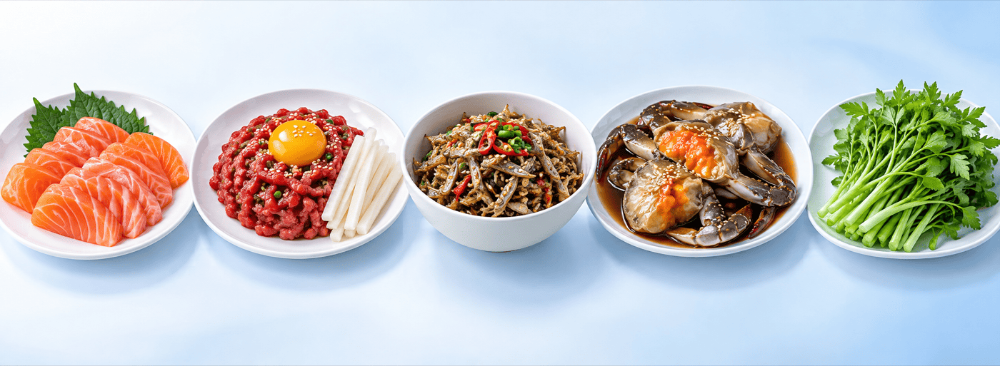

정기적으로 구충제를 먹어야 할까요
정기적으로 구충제를 먹어야 할까요
연수강좌 질의응답 · 연자의 답변
“요즘도 예방을 위해 구충제를 먹어야 하나요?”라는 질문에 연자는 이렇게 답했습니다. 예전에 주기적으로 복용하던 구충제는 알벤다졸이고, 회충 같은 장내 기생충에 효과가 있는 약입니다. 그러나 현재 한국에서 흔한 기생충은 장내 기생충보다 음식을 통해 전파되는 간흡충·폐흡충·조충류여서 주기적으로 구충제를 복용할 필요는 없을 것 같고, 지금은 기생충 예방을 위해 음식을 잘 익혀 먹는 것이 가장 중요하다고 답했습니다.
예방의 가장 중요한 방법입니다.
정기 구충제
알벤다졸은 장내 기생충에 듣는 약으로, 정기 복용은 필요 없을 것 같다고 했습니다.
약은 종류에 맞게 진료실에서 정합니다.
 어떤 날음식에서 어떤 기생충이 올까요
어떤 날음식에서 어떤 기생충이 올까요

연어·송어회광절열두조충
육회(덜 익힌 고기)무구조충
민물고기 날것간흡충
민물게장폐흡충
생미나리간질
치료약은 진료실에서 처방합니다. 광절열두조충·무구조충·간흡충·폐흡충은 프라지콴텔이고, 간질은 알벤다졸·프라지콴텔이 듣지 않아 트리클라벤다졸을 씁니다.
생선·고기 — 연자가 설명한 내용
연어·송어회
- 큰 생선이 작은 물고기·플랑크톤을 먹으며 몸에 감염형이 쌓여, 야생 송어·연어가 문제입니다.
- 사료를 먹여 키운 국내 양식 송어가 원인이 될 확률은 매우 낮다고 했습니다.
- 대변에 납작하고 길쭉한 조각이 나올 수 있습니다.
육회·돼지고기
- 지금은 돼지고기가 아니라 육회를 먹어 걸리는 무구조충이 주로 문제가 됩니다.
- 유구조충은 예전 제주 돼지에서 알려졌고 지금은 한국에서 거의 없어졌습니다.
- 유구조충의 충란을 잘못 삼키면 신경계에 낭미충이 생겨 치명적일 수 있어 조심합니다.
민물고기 (간흡충)
- 조사하면 한국에 남은 가장 흔한 기생충입니다. 몇 cm의 작은 민물고기를 날로 무쳐 먹은 분이 주로 걸렸고, 지금은 주로 4대강 유역에 남아 있습니다.
- 담도(쓸개즙길)에 살며 증상이 거의 없고 조용합니다. 만성 염증이 오래되면 담도암이 문제가 됩니다.